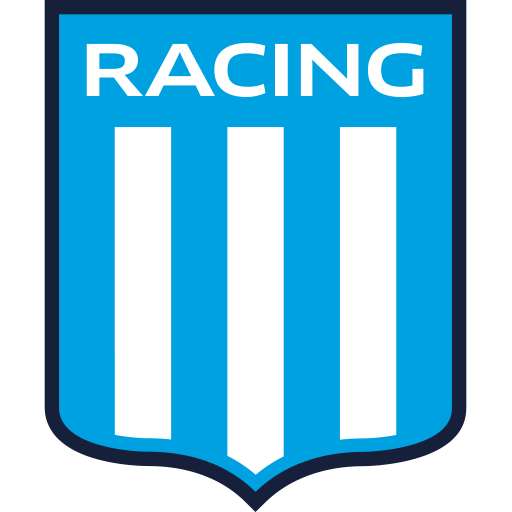
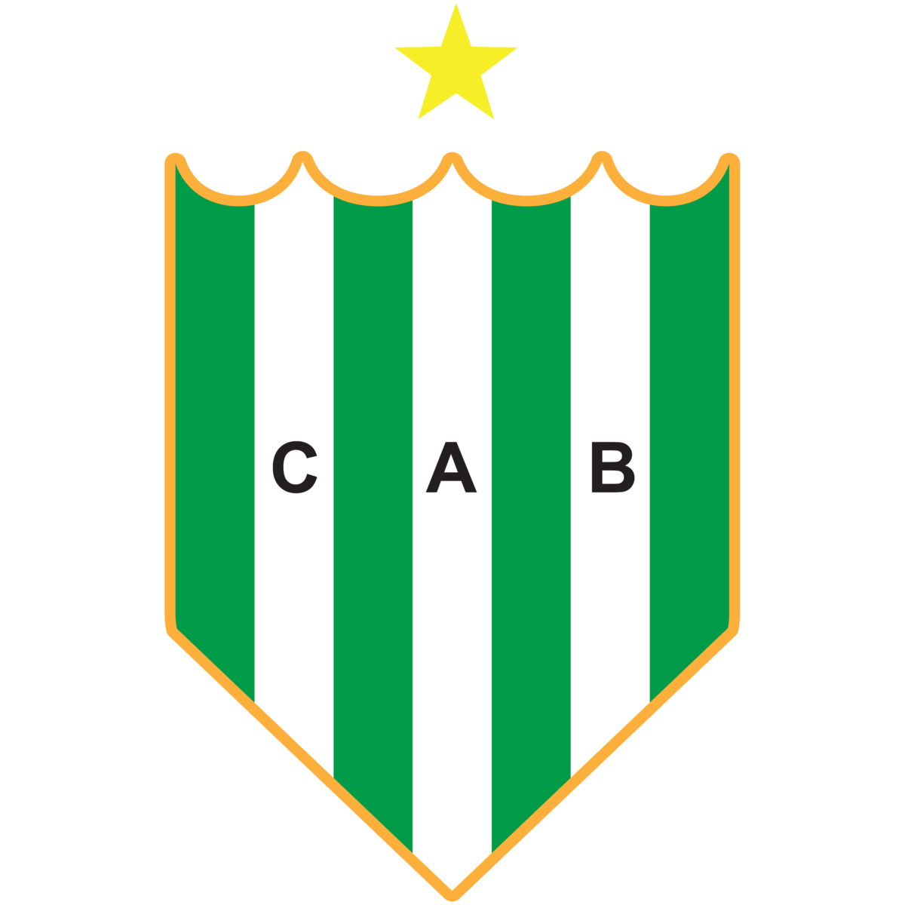
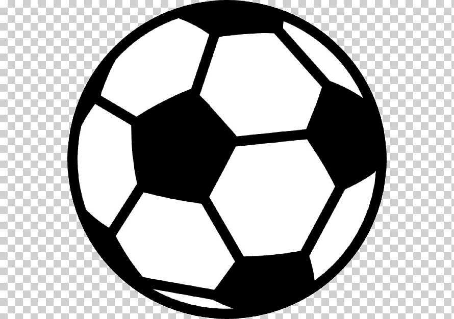
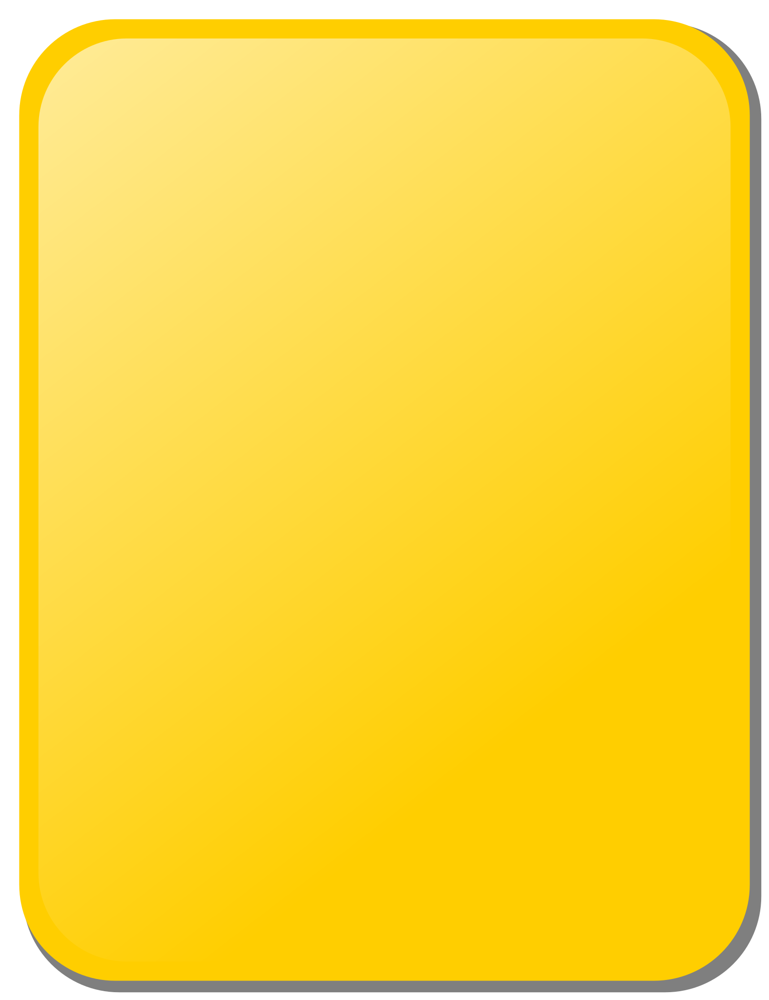

Proximos Partidos
| Competición | Instancia | Rival | Fecha | Estadio |
|---|---|---|---|---|
 Copa de la
liga Copa de la
liga |
Fecha 3 |  |
20/02/2022 | Marcelo Bielsa |
| Copa de la
liga |
Fecha 4 |  | 27/02/2022 | Monumental |
| Copa de la liga
|
Fecha 5 |  |
05/03/2022 | Nuevo Gasómetro |
| Copa de la liga
|
Fecha 6 | 13/03/2022 | Monumental | |
 Supercopa Argentina Supercopa Argentina |
Final |  |
16/03/2022 | Sede a confirmar |
| Copa de la liga
|
Fecha 7 | |
20/03/2022 | Monumental |
Tabla de posiciones
| Posición | Equipo | PJ | DG | PTS |
|---|---|---|---|---|
| 1 |  |
2 | +4 | 6 |
| 2 | 2 | +1 | 4 | |
| 3 | 2 | +1 | 4 | |
| 4 |  |
2 | +2 | 3 |
| 5 |  |
1 | +1 | 3 |
| 6 | 1 | +1 | 3 | |
| 7 | |
2 | -2 | 3 |
| 8 |  | 2 | 0 | 2 |
| 9 | 2 | 0 | 2 | |
| 10 |  |
2 | -1 | 1 |
| 11 | |
2 | -1 | 1 |
| 12 |  |
1 | -1 | 0 |
| 13 | 1 | -1 | 0 | |
| 14 |  |
2 | -4 | 0 |
Ultimo Partido
| Minuto | Suceso | Jugador | Resultado |
|---|---|---|---|
| 6' | GOL | Paulo Díaz en contra | 0-1 |
| 21' | GOL | Julián Álvarez | 1-1 |
| 25' | Amarilla | Gudiño | |
| 31' | GOL | Julián Alvarez | 2-1 |
| 39' | Amarilla | Quintana | |
| 50' | GOL | Julián Alvarez | 3-1 |
| 57' | Cambio | sale herrera - entra barrios | |
| 57' | Cambio | sale garcia - entra ortiz | |
| 65' | Cambio | sale Barco - entra Quintero | |
| 65' | Cambio | sale Pochetinno - entra Romero | |
| 65' | Cambio | sale Leys - entra Banega | |
| 73' | Cambio | sale Pérez - entra Zuculini | |
| 73' | Cambio | sale Diaz - entra Pirez | |
| 73' | Cambio | sale Casco - entra Gomez | |
| 79' | GOL | Quintero | 4-1 |
| 81' | Cambio | sale Cobos - entra Kruspzky | |
| 81' | Cambio | sale Castro - entra Medina |